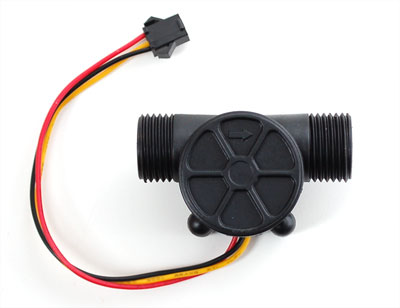
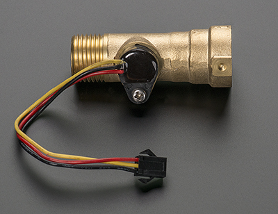

Measure liquid/water flow for your solar, computer cooling, or gardening project using this handy basic flow meter. This sensor sit in line with your water line, and uses a pinwheel sensor to measure how much liquid has moved through it. The pinwheel has a little magnet attached, and there’s a hall effect magnetic sensor on the other side of the plastic tube that can measure how many spins the pinwheel has made through the plastic wall. This method allows the sensor to stay safe and dry.
The sensor comes with three wires: red (5-24VDC power), black (ground) and yellow (Hall effect pulse output). By counting the pulses from the output of the sensor, you can easily track fluid movement: each pulse is approximately 2.25 milliliters. Note this isn’t a precision sensor, and the pulse rate does vary a bit depending on the flow rate, fluid pressure and sensor orientation. It will need careful calibration if better than 10% precision is required. However, its great for basic measurement tasks!
10$
$24.95
